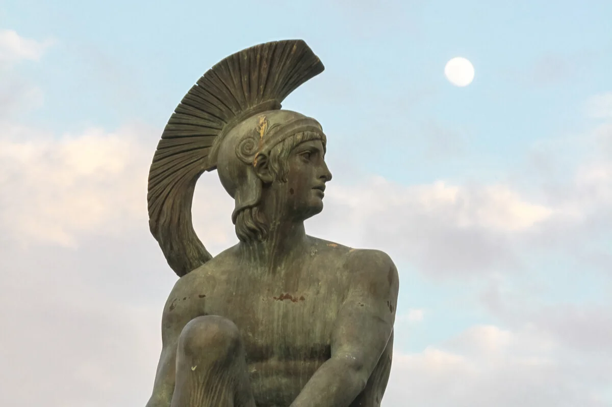

consultar costumbres
consultar video
consultar tabla

.
margenes

hades
Hades es una figura de la mitología griega y es considerado el dios del inframundo y de los muertos. Es uno de los tres hermanos principales junto con Zeus y Poseidón, hijos de los titanes Crono y Rea. Tras la derrota de los titanes en la Titanomaquia, Zeus, Poseidón y Hades se repartieron el mundo, siendo Hades quien gobernó sobre el inframundo.
- Reinado en el inframundo: Hades gobernaba sobre el inframundo, también conocido como Hades o el reino de los muertos. Se le asociaba con la muerte y la oscuridad, y su función era gobernar y supervisar el destino de las almas de los muertos.
- Personalidad y apariencia: Hades se describía como un dios serio y reservado. A menudo se le representaba como un hombre de mediana edad con barba y vestimenta oscura. Se le atribuía una corona de invisibilidad que le permitía moverse libremente tanto en el mundo de los vivos como en el inframundo.
- Mitos y leyendas: Hades desempeña un papel importante en varios mitos griegos. Uno de los más conocidos es el rapto de Perséfone, hija de Deméter, por parte de Hades para convertirla en su esposa y reina del inframundo. Este rapto es el motivo asociado con las estaciones del año, ya que cuando Perséfone está con Hades, su madre Deméter se entristece y la naturaleza se vuelve estéril.
- Culto y adoración: A diferencia de otros dioses olímpicos, Hades no era ampliamente adorado en la antigua Grecia. Los griegos solían tenerle miedo y evitaban mencionar su nombre, ya que se creía que pronunciarlo atraería su atención y mala fortuna.
atenea
Atenea, también conocida como Palas Atenea, es una figura prominente de la mitología griega. Es considerada la diosa de la sabiduría, la estrategia militar, las artes y la justicia. A continuación, se presentan algunos aspectos destacados sobre Atenea:
- Sabiduría y conocimiento: Atenea es conocida por su sabiduría y su amplio conocimiento. Se la considera la patrona de las artes, la ciencia, la estrategia y la razón. También se le atribuye la invención de diversas disciplinas, como la música, la navegación y la medicina.
- Estrategia militar: Además de ser una diosa de la sabiduría, Atenea es una diosa guerrera y protectora de los héroes. Se la asocia con la estrategia militar y se dice que ha brindado asistencia a varios héroes griegos en batallas y guerras.
- Artes y artesanía: Atenea es considerada la diosa de las artes y la artesanía. Se le atribuye la creación del telar y se la representa a menudo con herramientas artesanales. También se la considera la patrona de los tejedores, escultores y otros artistas.
- Ciudad de Atenas: Atenea es especialmente venerada en la antigua ciudad de Atenas, donde se le atribuye el nombre de la ciudad y se la considera su protectora. En Atenas, se le construyó el Partenón, un famoso templo dedicado a su culto.
helios
Helios es una figura de la mitología griega y es considerado el dios del sol y la luz. Aquí tienes información sobre Helios:
- Representación y atributos: Helios era representado como un dios masculino con una corona o aureola de rayos de sol alrededor de su cabeza. A menudo se le mostraba conduciendo un carro dorado tirado por cuatro caballos alados. También se le asociaba con un disco solar.
- Dios del sol y la luz: Helios era considerado el dios personificado del sol y era adorado como una divinidad solar. Se creía que conducía el carro del sol a través del cielo durante el día, iluminando y calentando el mundo con su luz y calor.
- Genealogía: Según la mitología griega, Helios era hijo de los titanes Hiperión y Tea. También era hermano de Selene, la diosa de la luna, y Eos, la diosa del amanecer.
- Poderes y dominio: Helios tenía el poder de controlar el movimiento del sol y de otorgar luz y calor al mundo. También se le atribuían poderes proféticos y oraculares. Además, se creía que tenía conocimiento de los eventos y secretos que ocurrían en el mundo debido a su vigilancia constante desde lo alto.